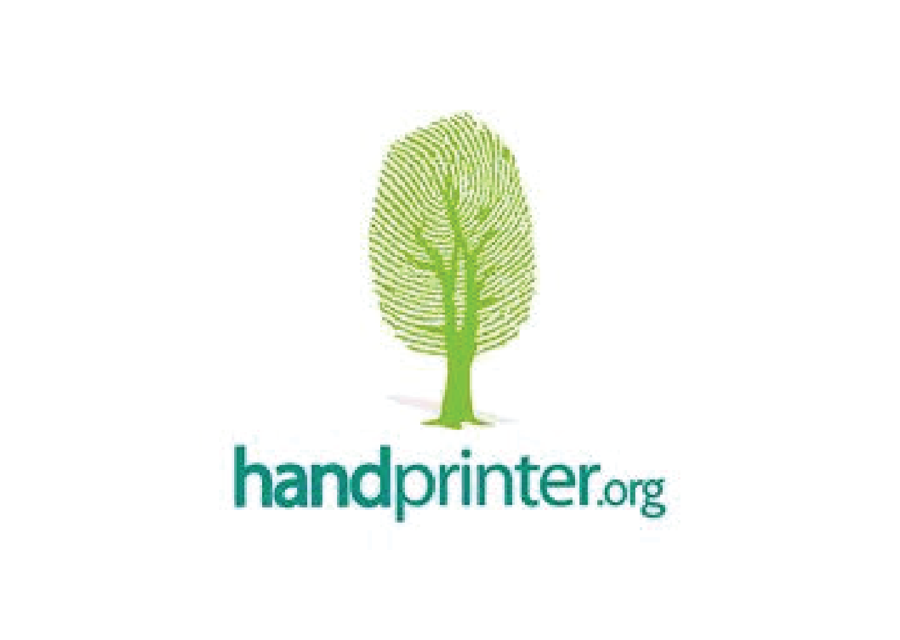

Handprinter
Team
- Jennifer Jin
- Chiamaka Nnebe
- Javed Ramjohn
- Mark Vella
Opportunity
Our client, Gregory Norris, who founded Handprinter, wants a platform for people all over the world to share and collaborate on handprint ideas. In order for such a platform to work, it needs to be user-friendly and accessible to anyone; otherwise, handprinting will not be accessible to a global population. This, in turn, will not help the organization achieve its core mission. Our team realized that a user-friendly interface to view, submit, collaborate on, and manage handprint ideas would set the stage for widespread creation and collaboration of handprint ideas.
Outcomes
The team developed a responsive Django web application with a PostgreSQL database hosted on Heroku. Visitors can view all ideas on the application and learn about Handprints. Registered users can submit ideas, vote on ideas, and comment on ideas. Seven user tests were conducted to gain feedback on the usability and perception of the application. Now, the Handprint organization has a fully functional application that allows people to submit ideas and discuss them. This completes the first part of the Handprinter ecosystem and paves the way for reaching the organization’s mission of having people submit and adopt ideas globally.
Deliverables
Our application is currently hosted on Heroku. Ownership of the application’s Github repository was transferred to the client. We provided the client with tutorials on administration features. Extensive documentation was given to the client, including the team’s requirements document that contain a history of all work performed, technical notes about areas of improvement and further work, a testing plan, user testing notes, and the user testing script used. Finally, the client was given the training and information needed to manage the Heroku account for the application.